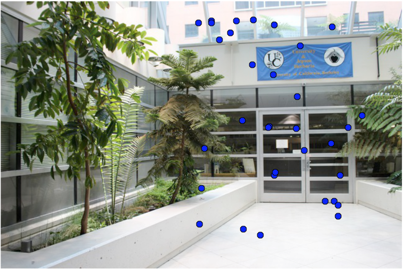
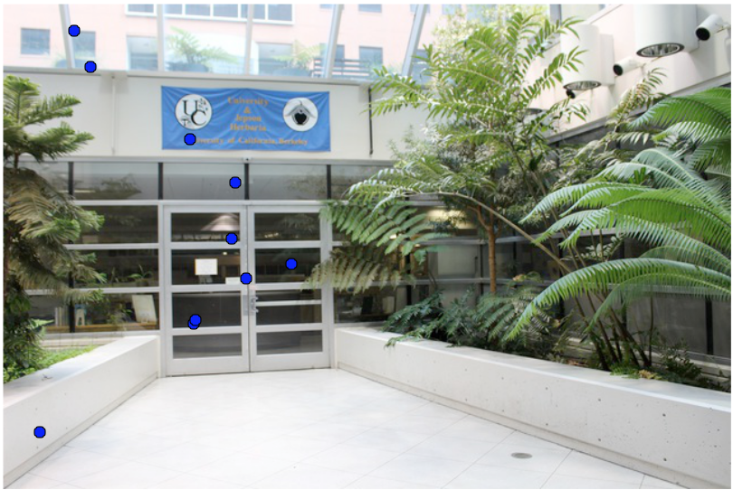

The first part of this project involved image warping and mosaicing. I took pictures using a high resolution camera at Indian Rock Park and across the UC Berkeley campus. Then, using correspondence points that I had hand selected, I found homographies between the images, warped them to the desired shape, and then blended them together using linear and multi-resolution blending. See my results for part 1 here.
In this second part of the project, the goal was to use feature matching so that images could be autostitched into panoramas without the need for a human to input correspondence points between the images. To do this, I followed the basics of this research paper. The total algorithm proceeds as follows: I found the harris corners in each image and implemented the Adaptive Non-Maximal Suppression algorithm to limit the number of interest points and spread them more evenly across the image. I then featurized each of these points, and matched the featurizations. Finally, I used the RANSAC algorithm to eliminate outliers. With the corresponding interest points between images determined, I proceeded to create a panorama in the same way I did as in part 1 of the project. Below is a more detailed account of this process as well as my panorama results.
The first step in feature matching is to identify important points in each of the images. To do this, I found the harris corners. The harris detector uses trace and determinant values of a matrix to estimate corner locations. The algorithm returns thousands of harris corners, below you can see all of them plotted on top of the images.
The next step is to select a subset of the harris feature points. However, simply choosing the strongest valued harris corners could result in points that do not overlap between the images. We want strong harris corners that are evenly dispersed throughout the image. I solved this problem by implementing Adaptive Non-maximal Supression (ANMS). Given an interest point, the ANMS assigns a radius to that point, which is determined by the distance to the nearest point that has a sufficiently greater harris value than it. The below equation defines the minimum supression radius r_i. In it, x_i is a 2D interest point location, I is the set of all interest point locations, and c_robust is a value that insures a neighbor must have a sufficiently larger value (I used .9). Once a radius is assigned to all interest points, I simply sorted by the radius and only kept the n interest points with the largest radii (n=500 in my case). Below the equation you can see the plotted points after ANMS. Notice how they are both spread out and important points.
In order to determine which of these points match which points from the other image. They must be featurized. To featurize each ANMS updated interest point, I took a 40x40 pixel window surrounding that point. I then downsampled that window to 8x8 in order to acheive a blurring effect. I turned the 8x8x3 matrix into a feature vector with length 192. Finally, I bias-gain normalized the vector by subtracting the mean and dividing by the standard deviation. The normalization helped account for lighting differences and small changes between the images.
Once all the interest points were the featurized, I matched them. I found the sum of squared differences (SSD) between every pairwise feature vector. The most likely match for each of the points is its nearest neighbor (point that has the lowest SSD). However, simply using every point's match as its nearest neighbor leads to a lot of false matches. Therefore, I implemented what Professor Efros named the Russian Auntie Algorithm. This says that the Nearest Neighbor (NN1) must have a sufficiently smaller SSD than the second Nearest Neighbor (NN2). In other words, this algorithm only keeps the pairs of interest points where NN1/NN2 < threshold. I used a threshold of .3. Below you can see the remaining interest points after they were featurized and matched.
|  |
Although the Russian Auntie Algorithm does a good job of eliminating outliers and only keeping relatively good matches, there are still outliers. Using least squares to determine a homography when there are outliers will result in a poor panorama. Therefore, we must remove the remaining outliers. I did this by implementing the Random Sample Concensus (RANSAC) algorithm. This algorithm has a loop that chooses 4 points at random and uses to to calculate a homography. It then sees how many other points agree with this homography. This loop continues and the random point set that had the most votes over the course of the loop wins. All of the points that were included in the winning vote determines the correspondence points. Below you can see an example of the pairs of correspondence points of images after RANSAC was run.
|  |
After the conclusion of RANSAC, we are left with correspondence points between images with no outliers. This is the automatic version of entering the correspondence points in manually like in part 1. We can proceed to create panoramas the same way as done in part 1. Below are some panorama results using the automated correspondence points. I decided to create different panoramas than the ones I created in part 1.
For the Bells and Whistles, I implemented panorama recognition. Given a directory containing unordered pictures in which some of them are panoramas consisting of two images, my algorithm finds out which pairwise images belong in a panorama and automatically stitches them together.
To do this, I simply attempted to find correspondence points between every combination of pairwise images. If the Russian Auntie algorithm failed to find at least 4 matching features, then the images are assumed to not be part of the same panorama. I used four as the default number because at least 4 points are needed to determine a homography. If at least 4 correspondence points are discovered, then the algorithm proceeds to generate the panarama from the 2 images.
Below is an example of a panorama of two images that was automatically discovered from within a directory, then automatically stitched together. I used lower resolution photos for the panorama recognition because of the exponential number of combinations of pairwise images.